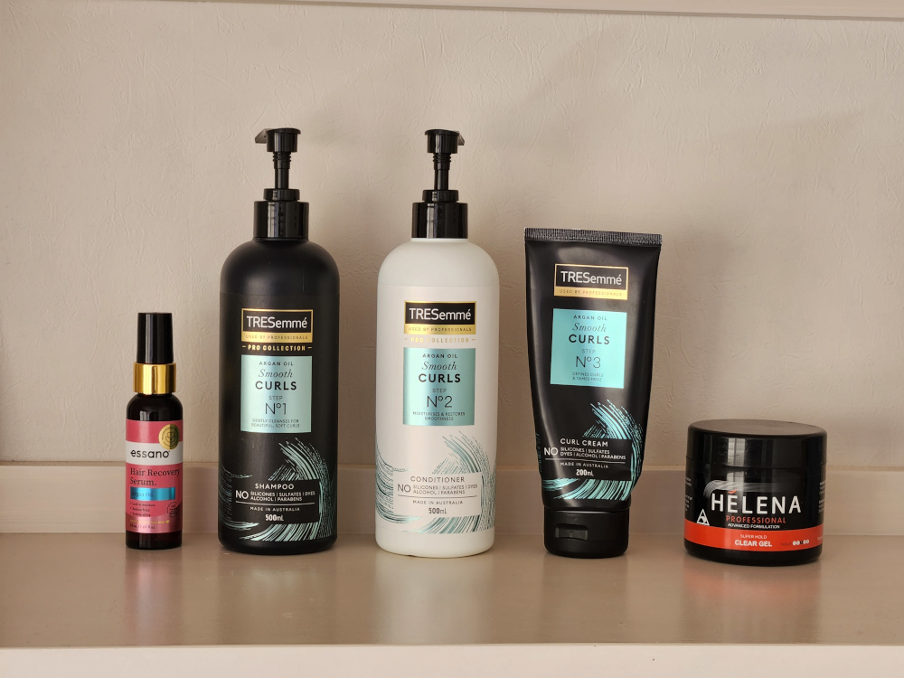

#2
18 Dec 2024
This one's completely unrelated to tech, but I thought it would be easy to post my haircare routine here and link to friends. FYI, I have curly hair and have done a lot of work to find a routine that works best for me. My hair is normal porosity, normal density, and curl pattern 3A/3B. Without futher ado!
Before I step into the shower, I oil my scalp with some argan oil, specifically Essano Hair Treatment Argan Oil. This is mainly for hair regrowth purposes than to actually make my curls healthier, and even then it's dubious if it helps with regrowth at all. I've been doing a middle part for years and I have obviously less hair there, so I want to cover it up. I switch parts from side to side and even zig-zag every so often to avoid further damage.
I wash my body first before completely wetting my hair while standing upright. This takes about a minute. I'm fairly confident my hair is normal porosity now so my hair isn't super thirsty for hydration.
I use four pumps of Tresemme Smooth Curls Shampoo to wash my scalp. No nails! Just my fingertips, and rubbing well to get rid of the dirt. Wash it off while standing upright, then use another three pumps of the shampoo to get a richer lather. Here I use it on both my scalp and my ends. Usually people advise that you should not shampoo the ends, but I find that my hair is a lot more springy and curly if I do wash them. When I wash the shampoo off, this time I do it with my hair flipped to really get all of it out.
For conditioning, I use 7 pumps of Tresemme Smooth Curls Conditioner. When I use the Essano Curl Define Conditioner, I squeeze out enough to cover half of my palm. While upright, I glaze a bit on the surface of my ends and repeat this motion multiple times, applying more pressure with every stroke. Eventually I grab my ends and stroke again such that the underside of my hair is covered in conditioner too. I part my hair into two, and continue to apply conditioner in this manner to each half such that my hair is now completely covered in conditioner. I then detangle each section with my fingers. To get a more even distribution and to further detangle, I take a plastic wide-toothed comb and comb my hair from root-to-end. If I'm wanting a middle or side part, this is when I do it with a comb. If I'm wanting a zig-zag, I save it for later.
Now I cup my hands to collect the shower water, and throw it on my hair about 3 times. This serves to get a better balance of water-conditioner in my hair. I bring all of my hair to one side and scrunch upwards to get rid of excess. I flip to the other side and repeat. I then grab my microfibre hair turban, flip my hair over, and wrap it up. I get out of the shower, get changed, and maybe do some chores, which takes about 10-15 minutes.
I unwrap my hair, look in the mirror and fix my part if it looks weird, or do a zig-zag part. I grab my Tresemme Smooth Curls Curl Cream, just less than a quarter-palm size. I rub it between my hands, take half my hair, and glaze it on the mids-to-ends only in a praying hands motion. After it's all covered, I then do a raking motion, starting from the roots and moving it all the way to the ends. Lastly, I scrunch my hair, making sure to bring it all the way up to my scalp for root volume. I repeat on the other side.
I grab about half a palmful worth of Helena Professional Super Hold Clear Gel (yes, that much). Again I rub my hands together, take half of my hair, and glaze it on the mids-to-ends only in a praying hands motion. I do not rake the product in this time, but I do scrunch to scalp. Repeat on the other half.
I then use two claw clips to lift up the roots where my part is - one for the front of my head and another towards the back. From here on out I mostly air dry it, and if I have nowhere to be that evening I sleep with a satin bonnet without breaking the gel cast (I move around a lot when I sleep so it gets broken that way). If I do have somewhere to be that evening, I still try to air dry if possible. If not, I will kick start the drying process with a hairdryer set on the lowest speed and heat setting. I do my roots first and then my ends. And of course I apply heat protectant beforehand. A lot of it, because goddamnit I am NOT undoing my healthy-hair progress. I sometimes dry it all the way, or only partially and air-dry for the rest of the day. I only break the gel cast when it's completely dry to avoid frizz. I do this just by scrunching upwards and "clapping" my hair. Some people do this with oil - I haven't experimented enough to confirm if it works well for my hair. And voila! Gorgeous curls!

Maintenance is easy. Every day I wake up, I flip my hair upside down and shake it by moving side-to-side and forwards-backwards. I stand upright and shake the roots out with my hands. I used to spray my hair with a water-conditioner-curl cream-gel combination but I find that it makes my hair frizzy. Maintenance is not perfect, though - I ordered a shower cap last month for in-between washes, but my hair is too voluminous for it and my ends get a bit loose. The longer I go without washing, the limper the curls close to my roots get - the very ends are usually always perfect. Also I have to put my hair up for work usually, and that always destroys my roots too. I have seen on r/curlyhair that applying more gel to your hair half-way through the drying process may fix this - I am yet to test it.